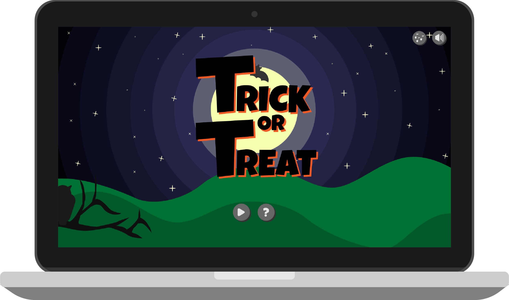

Project brief
What is the most exciting way of learning web animation and get introduced to basic programming with JavaScript? A game. Lucky to have it as a project for basic animation theme, I created a game called Trick or Treat in which the player has to collect required amount of candies during given time, else gameIsOver = true.
Acquired competences
During the project I learnt game design principles, planning game mechanics by using activity and state machine diagrams. I advanced my CSS skills by learning animations and most importantly, got a basic JavaScript foundation. This project was a breaking point in understanding how to organise and strategize code, use web developer tools and debug code.

Workflow
The workflow was a mixture of game mechanics and design. While sketching the game design and drawing it in Adobe Illustrator, I also considered game mechanics first in paper prototype, followed by UML activity diagram and UML state machine diagram a bit later in the process. The diagrams were important in order to write code and have guidance while writing JavaScript. The last stage of the process was recording sound and editing it in Adobe Audition.
Ideation and peer review
The first stage of the process was coming up with a game idea, having a lot of attractive ideas for the game, I ended up choosing Halloween theme with a focus on ‘trick or treat’ part. After short consideration of game mechanics, I made a paper prototype and got peer feedback which helped me to consider the concept of the game in greater detail.
Game design
Based on shape theory, I gave my characters’ a round shape to emphasise on them being friendly children even if they are dressed in terrifying Halloween costumes. The background design was based on foreground - middle ground - background scheme where foreground is the darkest and background is the brightest. For UI elements I decided to go with hearts to indicate lives, liquid bar to indicate the running time and writing score in numbers with a candy next to it. Making the UI elements different from each other improved UX because user can access needed information without having to think.
Game mechanics and code
The development of game mechanics began with paper prototype and developed into a UML activity diagram which showed the game mechanics in a more precise way. I ended up basing my code on the UML state machine diagram where I planned every action that has to be declared in JavaScript, hence easing the process of writing structured and precise JavaScript code.
Besides CSS animations and getting acquainted with Git, I laid a foundation to my JavaScript understanding which was crucial to get my game working. I learnt to make a use of events, functions, logic conditions, “this”, implement randomness, set time and created text output. To find errors faster, I learnt to use console and improved my general code problem solving skills.